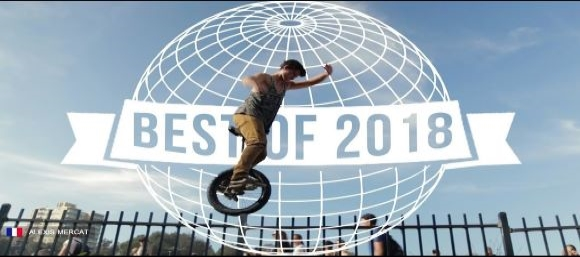

Vad är extrem enhjuling?
Extrem enhjuling eller extreme unicycle som det heter på engelska, är ett samlingsnamn för flera olika sporter inom enhjuling. Dom tre populäraste är trial, flatland och street. Klicka på länkarna ovan för att lära dig mer om varje disciplin. Följande bild är en länk till en video som innehåller dom bästa klippen från alla dicipliner år 2018!
